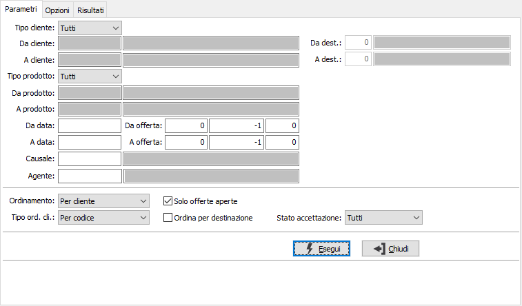
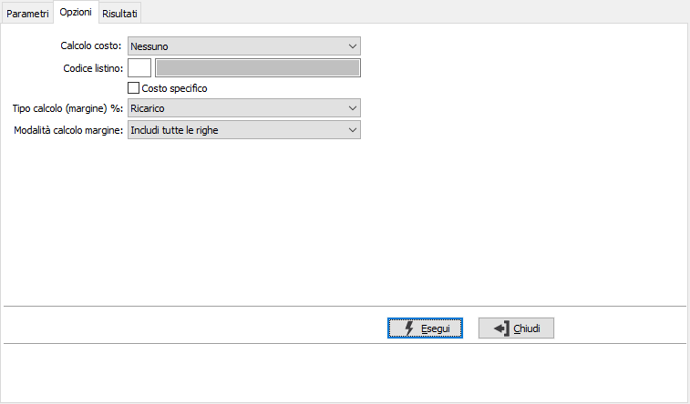
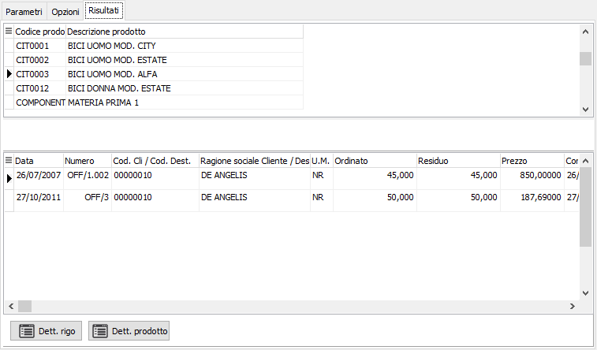

Analisi offerte
Il programma effettua la visualizzazione delle offerte esistenti in archivio in base ai parametri inseriti dall’utente.
E’ possibile visualizzare le offerte relative ad una tipologia omogenea di causali, e/o ad uno o più clienti e/o ad uno o più prodotti, siano essi provvisori o definitivi, entro limiti di data specificati.
E’ possibile selezionare solo le offerte aperte oppure tutte le offerte.
Il programma si articola su due finestre video. La prima, Parametri, consente la definizione dei parametri di analisi.

TIPO CLIENTE: consente di analizzare tutti i clienti, i clienti provvisori o quelli definitivi.
DA CLIENTE: eventuale codice del cliente, presente in anagrafica, da cui si vuole iniziare la selezione di analisi. Confermando a vuoto, la selezione inizia dal primo cliente valido. Sul campo sono attive le funzioni di ricerca (F9).
A CLIENTE: eventuale codice del cliente, presente in anagrafica, con cui si vuole terminare la selezione di analisi. Confermando a vuoto, la selezione termina con l’ultimo cliente valido. Sul campo sono attive le funzioni di ricerca (F9).
DA DESTINAZIONE: codice della destinazione del cliente, da cui si vuole iniziare la selezione di analisi. Confermando a vuoto, la selezione inizia dalla prima destinazione valida; il campo è attivo solo se viene analizzato un unico cliente effettivo. Sul campo sono attive le funzioni di ricerca (F9).
A DESTINAZIONE: codice della destinazione del cliente, con cui si vuole terminare la selezione di analisi. Confermando a vuoto, la selezione termina con l'ultima destinazione valida; il campo è attivo solo se viene analizzato un unico cliente effettivo. Sul campo sono attive le funzioni di ricerca (F9).
TIPO PRODOTTO: consente di analizzare tutti i prodotti, i prodotti provvisori o quelli definitivi.
DA PRODOTTO: eventuale codice dell'articolo, presente in anagrafica, da cui si desidera iniziare la selezione di analisi. Confermando a vuoto, la selezione inizia con il primo prodotto valido. Sul campo sono attive le funzioni di ricerca (F9).
A PRODOTTO: eventuale codice dell'articolo, presente in anagrafica, a cui si desidera terminare la selezione di analisi. Confermando a vuoto, la selezione termina con l’ultimo prodotto valido. Sul campo sono attive le funzioni di ricerca (F9).
DA DATA: eventuale data del documento da cui deve iniziare l’analisi dei documenti relativamente ai precedenti parametri di selezione. Confermando a vuoto, l’analisi inizia con il primo documento valido.
A DATA: eventuale data del documento con cui si desidera terminare l’analisi dei documenti relativamente ai precedenti parametri di selezione. Confermando a vuoto, l’analisi si conclude con l'ultimo documento valido.
DA OFFERTA: indicare anno, serie (-1 tutte), e numero da cui iniziare l'elaborazione.
A OFFERTA: indicare anno, serie (-1 tutte), e numero con cui terminare l'elaborazione.
CAUSALE: eventuale codice della causale delle offerte a cui si vuole restringere la selezione di analisi. Sul campo sono attive le funzioni di ricerca (F9) sulla tabella omonima.
AGENTE: eventuale codice dell'agente a cui si vuole restringere la selezione di analisi. Sul campo sono attive le funzioni di ricerca (F9) sulla tabella omonima.
ORDINAMENTO: combo box per definire i criteri di ordinamento. Valori ammessi: Per cliente; Per prodotto.
TIPO ORDINAMENTO CLIENTE: attivo solo se l'ordinamento è per cliente; definisce se i clienti devono essere riportati per codice o per ragione sociale.
SOLO OFFERTE APERTE: check box per definire lo stato dei documenti da selezionare. Valori ammessi: vuoto = tutti i documenti; spunta = solo i documenti aperti.
ORDINA PER DESTINAZIONE: attivo solo se l'ordinamento è per cliente; definisce se l'analisi deve essere impostata per cliente/destinazione.
STATO ACCETTAZIONE: consente di selezionare le offerte accettate, quelle ancora da accettare, le non accettate o tutte, in relazione all'indicazione presente sulla testa del documento.
Al termine della finestra dei parametri video di selezione, non avviando la selezione si passa alla finestra video opzioni:

CALCOLO COSTO: definisce se e su che base deve essere determinato il costo relativo al documento; valori possibili: nessuno, prezzo medio, costo ultimo carico, costo di mercato, prezzo di vendita o listino. Se gestito il calcolo del costo, sarà determinato il costo e rapportato al valore del documento fornendo il margine in valore ed in percentuale.
CODICE LISTINO: codice del listino prezzi da utilizzare per ricercare il costo per il calcolo costo da listino. Sul campo sono attive le funzioni di ricerca (F9) sulla tabella listini.
COSTO SPECIFICO: definisce se ignorare le normali valorizzazioni del calcolo costo e prelevare il prezzo indicato sull’ordine fornitore generato dall’ordine cliente derivante dall'offerta, se attiva la gestione del codice fornitore sugli ordini (casella con segno di spunta).
TIPO CALCOLO %: definisce se nel calcolo della percentuale si deve applicare la formula del margine ((venduto-acquistato)/venduto) o del ricarico ((venduto-acquistato)/acquistato); valori possibili: Ricarico o Margine.
modalità calcolo margine: definisce quali righe dei documenti influiranno sul calcolo del margine; valori possibili:
Includi tutte le righe
Includi solo le righe prodotto
Includi solo le righe prodotto con costo valorizzato
Confermando tramite pressione del bottone Esegui, viene avviata la selezione e richiamata la finestra video Risultati.

La finestra video è articolata su due sezioni: la sezione superiore elenca i clienti, clienti/destinazioni o gli articoli selezionati in base al tipo di ordinamento scelto.
La sezione inferiore elenca invece i movimenti relativi al cliente, cliente/destinazione oppure all’articolo selezionato, che è quello contrassegnato dalla freccia, a sinistra del rigo nella sezione superiore. I pulsanti Dettaglio in basso, visibili solo se gestito il dettaglio delle quantità, se attivi, consentono la visualizzazione del dettaglio quantità del singolo rigo selezionato, oppure, se l'analisi è per prodotto, dei dettagli quantità totali del prodotto selezionato.